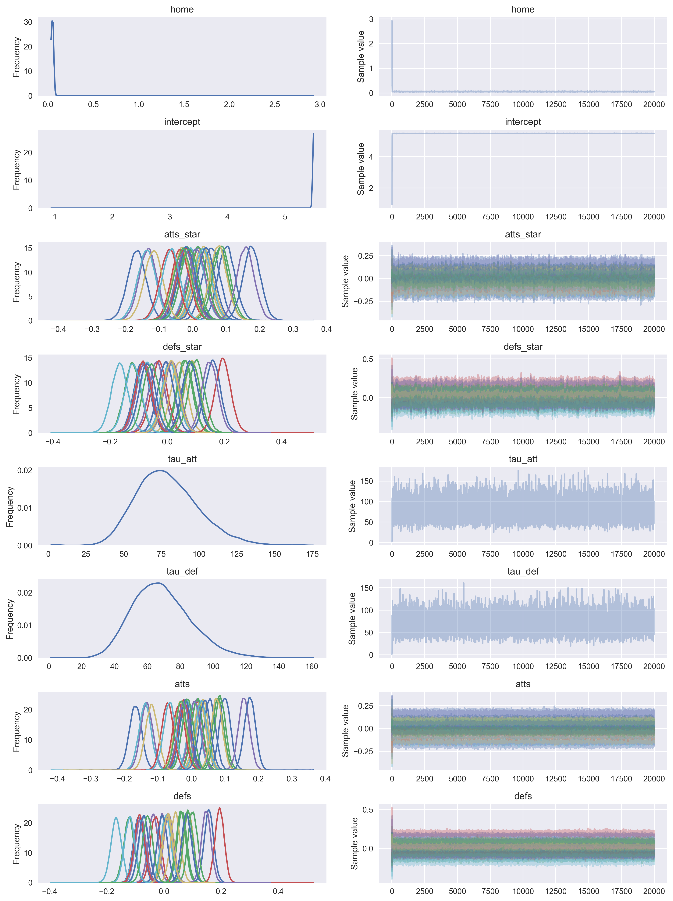
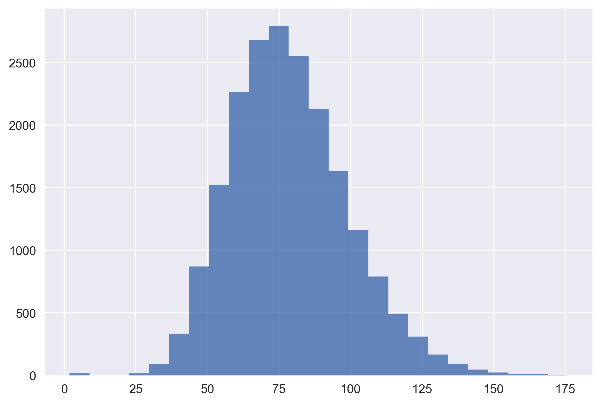
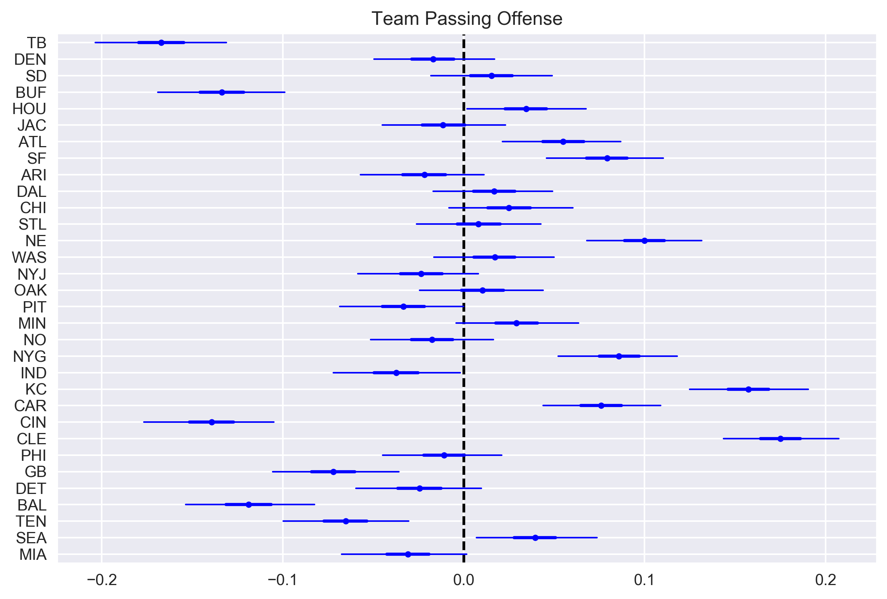
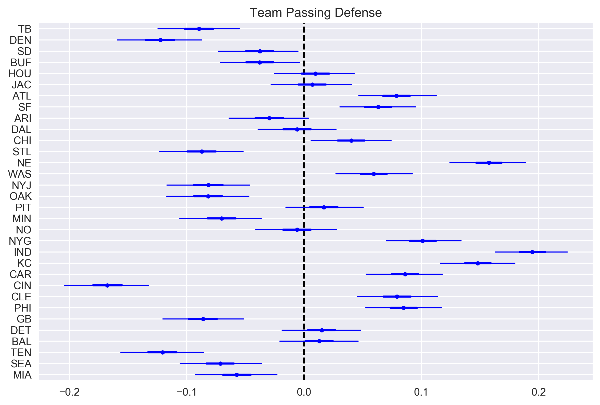
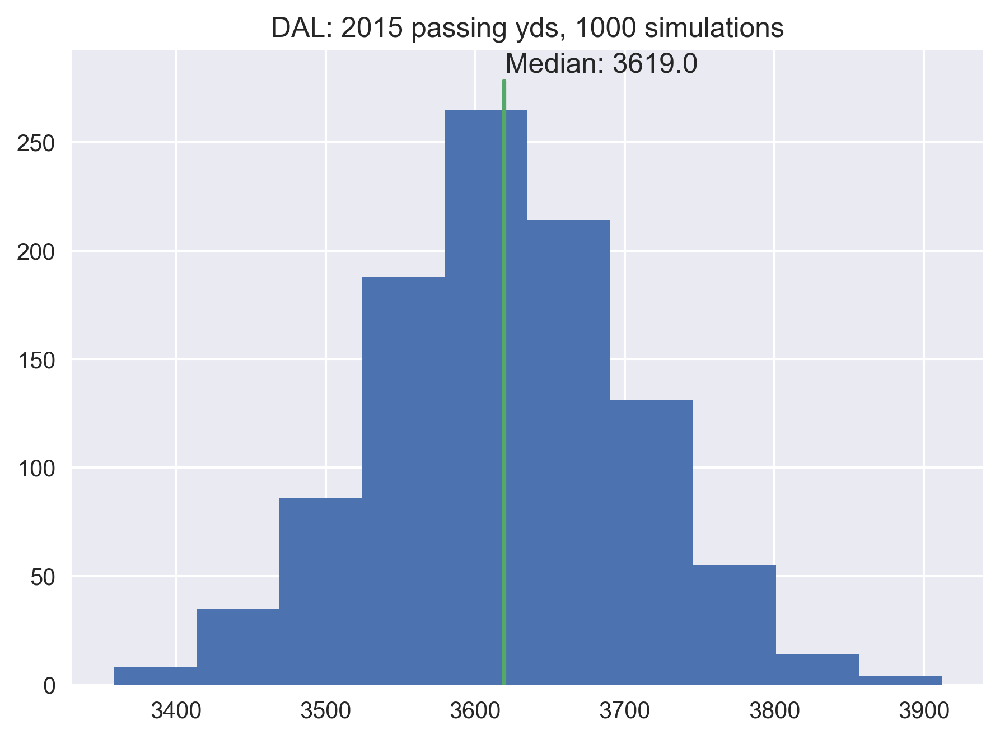
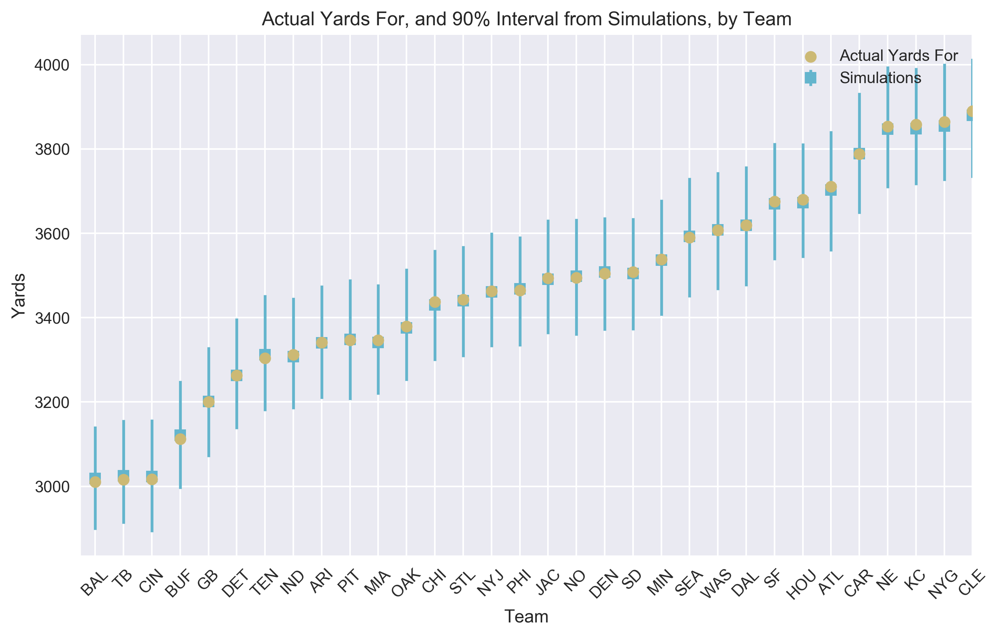

football
Table of Contents
1 Import modules
(setq python-shell-interpreter "ipython2") ;; make sure we use python 2
import math import nfldb import matplotlib.pyplot as plt from pylab import rcParams %matplotlib inline %config InlineBackend.figure_format = 'png' import seaborn as sns import numpy as np import pandas as pd import theano.tensor as tt import pymc3 as pm from IPython.core.debugger import Tracer
2 The data
2.1 nfldb
Create data base with passing yards for the 2015 regular season with nfldb
# selftart up nfldb
db = nfldb.connect()
q = nfldb.Query(db)
season_year = 2015
season_type = 'Regular'
# play id
q.game(season_year=season_year, season_type=season_type)
# plays = g.as_plays()
# initialize
home_team = []
away_team = []
gamekey = []
home_yds = []
away_yds = []
week = []
# loop through games
for i in range(1,16):
# find out who plays who
q = nfldb.Query(db).game(season_year=season_year,season_type=season_type,week=i)
num_games = 0
for g in q.as_games():
home_team.append(g.home_team)
away_team.append(g.away_team)
gamekey.append(g.gamekey)
week.append(i)
num_games += 1
# cycle through each playplayer for yards
for i in range(0, num_games):
# home team yards
q = nfldb.Query(db).game(gamekey=gamekey[i],team=home_team[i])
q.play_player(team=home_team[i])
pps = q.as_aggregate()
home_yds.append(sum(pp.passing_yds for pp in pps))
# away team yards
q = nfldb.Query(db).game(gamekey=gamekey[i],team=away_team[i])
q.play_player(team=away_team[i])
pps = q.as_aggregate()
away_yds.append(sum(pp.passing_yds for pp in pps))
# save to a new dataframe
df = pd.DataFrame({'home_team':home_team,
'away_team':away_team,
'home_yds':home_yds,
'away_yds':away_yds,
'week':week,
'gamekey':gamekey})
2.2 Munging
Create a look-up table for team names
teams = df.home_team.unique()
teams = pd.DataFrame(teams, columns=['team'])
teams['i'] = teams.index
teams.head()
teams.to_csv('teams.csv')
Create away and home columns
df = pd.merge(df, teams, left_on='home_team', right_on='team', how='left')
df = df.rename(columns = {'i': 'i_home'}).drop('team', 1)
df = pd.merge(df, teams, left_on='away_team', right_on='team', how='left')
df = df.rename(columns = {'i': 'i_away'}).drop('team', 1)
num_teams = len(df.i_home.drop_duplicates())
df.to_csv('out.csv')
df.head()
away_team away_yds gamekey home_team home_yds week i_home i_away 0 TEN 209 56515 TB 210 1 0 29 1 BAL 117 56513 DEN 175 1 1 28 2 DET 246 56512 SD 404 1 2 27 3 IND 243 56504 BUF 195 1 3 20 4 KC 243 56506 HOU 334 1 4 21
g = df.groupby('i_away')
avg_away_yds = g.away_yds.mean() # log of mean scores when away
g = df.groupby('i_away')
avg_home_yds = g.home_yds.mean() # log of mean scores when away
r = (avg_away_yds.values + avg_away_yds.values)/2
i = np.argsort(r)
print teams.team[i]
3 Modeling
3.1 Initial parameter values
g = df.groupby('i_away')
att_starting_points = np.log(g.away_yds.mean()) # log of mean scores when away
g = df.groupby('i_home')
def_starting_points = -np.log(g.away_yds.mean())
3.2 Priors
model = pm.Model()
with pm.Model() as model:
# global model parameters
home = pm.Normal('home', 0, tau=.0001)
tau_att = pm.Gamma('tau_att', .1, .1)
tau_def = pm.Gamma('tau_def', .1, .1)
intercept = pm.Normal('intercept', 0, tau=.0001)
#team-specific parameters
atts_star = pm.Normal('atts_star',
mu = 0,
tau = tau_att,
shape = num_teams)
defs_star = pm.Normal('defs_star',
mu = 0,
tau = tau_def,
shape = num_teams)
3.3 Constraints
with model:
atts = pm.Deterministic('atts', atts_star - tt.mean(atts_star))
defs = pm.Deterministic('defs', defs_star - tt.mean(defs_star))
home_theta = tt.exp(intercept + home + atts[df.i_home.values] + defs[df.i_away.values])
away_theta = tt.exp(intercept + atts[df.i_away.values] + defs[df.i_home.values])
3.4 Update with observed data
with model:
# likelihood of observed data
home_yds = pm.Poisson('home_yds',
mu=home_theta,
observed=df.home_yds.values)
away_yds = pm.Poisson('away_yds',
mu=away_theta,
observed=df.away_yds.values)
3.5 Sample
with model:
start = pm.find_MAP()
step = pm.NUTS(state=start)
trace = pm.sample(20000,step,init=start)
pm.traceplot(trace)

4 Results
4.1 Convergence
plt.hist(trace['tau_att'], histtype='stepfilled', bins=25, alpha=0.85)

4.2 Confidence Intervals
4.2.1 Attack strength
[BUG: CLE does not have the best passing in the league]
pm.forestplot(trace, varnames=['atts'], ylabels=teams['team'], main="Team Passing Offense")

4.2.2 Defense strength
pm.forestplot(trace, varnames=['defs'], ylabels=teams['team'], main="Team Passing Defense")

5 Simulation
5.1 Simulation functions
def simulate_season():
"""
Simulate a season once, using one random draw from the mcmc chain.
"""
num_samples = trace['atts'].shape[0]
draw = np.random.randint(0, num_samples)
atts_draw = pd.DataFrame({'att': trace['atts'][draw, :],})
defs_draw = pd.DataFrame({'def': trace['defs'][draw, :],})
home_draw = trace['home'][draw]
intercept_draw = trace['intercept'][draw]
season = df.copy()
season = pd.merge(season, atts_draw, left_on='i_home', right_index=True)
season = pd.merge(season, defs_draw, left_on='i_home', right_index=True)
season = season.rename(columns = {'att': 'att_home', 'def': 'def_home'})
season = pd.merge(season, atts_draw, left_on='i_away', right_index=True)
season = pd.merge(season, defs_draw, left_on='i_away', right_index=True)
season = season.rename(columns = {'att': 'att_away', 'def': 'def_away'})
season['home'] = home_draw
season['intercept'] = intercept_draw
season['home_theta'] = season.apply(lambda x: math.exp(x['intercept'] +
x['home'] +
x['att_home'] +
x['def_away']), axis=1)
season['away_theta'] = season.apply(lambda x: math.exp(x['intercept'] +
x['att_away'] +
x['def_home']), axis=1)
season['home_yds'] = season.apply(lambda x: np.random.poisson(x['home_theta']), axis=1)
season['away_yds'] = season.apply(lambda x: np.random.poisson(x['away_theta']), axis=1)
return season
def create_season_table(season):
'''
use dataframe output of simulate_season to creat summary season table
'''
g = season.groupby('i_home')
home = pd.DataFrame({'home_yds': g.home_yds.sum(),
'home_yds_against': g.away_yds.sum(),
})
g = season.groupby('i_away')
away = pd.DataFrame({'away_yds': g.away_yds.sum(),
'away_yds_against': g.home_yds.sum(),
})
df = home.join(away)
df['yf'] = df.home_yds + df.away_yds
df['ya'] = df.home_yds_against + df.away_yds_against
df = pd.merge(teams, df, left_on='i', right_index=True)
return df
def simulate_seasons(n):
dfs = []
for i in range(n):
s = simulate_season()
t = create_season_table(s)
t['iteration'] = i
dfs.append(t)
return pd.concat(dfs, ignore_index=True)
5.2 Execute simulations
simuls = simulate_seasons(1000)
5.3 View
5.3.1 Season passing yards for a single team
team_name = 'DAL'
ax = simuls.yf[simuls.team == team_name].hist(figsize=(7,5))
median = simuls.yf[simuls.team == team_name].median()
ax.set_title(team_name + ': 2015 passing yds, 1000 simulations')
ax.plot([median, median], ax.get_ylim())
plt.annotate('Median: %s' % median, xy=(median + 1, ax.get_ylim()[1]-10))

5.3.2 Comparison for all teams
df_observed = create_season_table(df)
g = simuls.groupby('team')
season_hdis = pd.DataFrame({'yds_for_lower': g.yf.quantile(.05),
'yds_for_median': g.yf.median(),
'yds_for_upper': g.yf.quantile(.95),
'yds_against_lower': g.ya.quantile(.05),
'yds_against_upper': g.ya.quantile(.95),
})
season_hdis = pd.merge(season_hdis, df_observed, left_index=True, right_on='team')
column_order = ['team', 'yds_for_lower', 'yf', 'yds_for_median', 'yds_for_upper',
'yds_against_lower', 'ya', 'yds_against_upper',]
season_hdis = season_hdis[column_order]
season_hdis['relative_yds_upper'] = season_hdis.yds_for_upper - season_hdis.yds_for_median
season_hdis['relative_yds_lower'] = season_hdis.yds_for_median - season_hdis.yds_for_lower
season_hdis = season_hdis.sort_index(by='yf')
season_hdis = season_hdis.reset_index()
season_hdis['x'] = season_hdis.index + .5
season_hdis
fig, axs = plt.subplots(figsize=(10,6))
axs.scatter(season_hdis.x, season_hdis.yf, c=sns.palettes.color_palette()[4], zorder = 10, label='Actual Yards For')
axs.errorbar(season_hdis.x, season_hdis.yds_for_median,
yerr=(season_hdis[['relative_yds_lower', 'relative_yds_upper']].values).T,
fmt='s', c=sns.palettes.color_palette()[5], label='Simulations')
axs.set_title('Actual Yards For, and 90% Interval from Simulations, by Team')
axs.set_xlabel('Team')
axs.set_ylabel('Yards')
axs.set_xlim(0, 20)
axs.legend()
_= axs.set_xticks(season_hdis.index + .5)
_= axs.set_xticklabels(season_hdis['team'].values, rotation=45)

[BUG: These aren’t right]